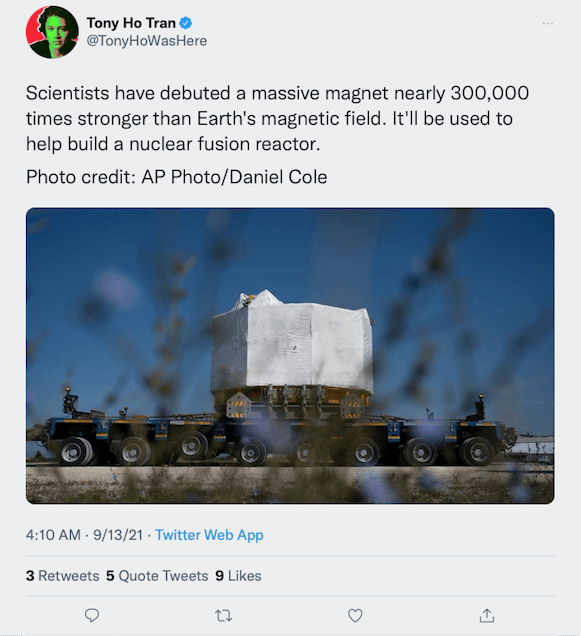

ဒီ သံလိုက်တုံးကြီးကို အမေရိကန် ပြည်ထောင်စုမှာ ရှိတဲ့ စက်ရုံ တစ်ရုံကနေ အထူးအော်ဒါ အနေနဲ့ ထုတ်လုပ်တာ ဖြစ်ပါတယ်။ အော်ဒါ မှာတဲ့ အဖွဲ့အစည်းကတော့ အပြည်ပြည်ဆိုင်ရာ သာမို နျူကလိယ စမ်းသပ် ဓါတ်ပေါင်းဖို (International Thermonuclear Experimental Reactor (ITER)) ကြီးကနေ မှာယူတာ ဖြစ်ပါတယ်။ တနည်းအားဖြင့်တော့ နေအတု စမ်းသပ်နေတဲ့ သုတေသန ဓါတ်ခွဲခန်း ဖြစ်ပါတယ်။
Associate Press (AP) သတင်းဌာနရဲ့ သတင်းပေးပို့ချက်အရ ဒီ သံလိုက်တုံးကြီးကို တပ်ဆင်ပြီးသွားရင် အမြင့် ပေ ၆၀ နဲ့ အချင်း ၁၄ ပေ ရှိမှာ ဖြစ်ပါတယ်။ ဒီသံလိုက်တုံးကြီးဟာ ဘယ်လောက်တောင် အားကောင်းလဲဆို လေယာဉ်တင် သင်္ဘောကြီးတွေကို မယူနိုင် လောက်တဲ့ အထိ အားကောင်းပါတယ်တဲ့။
ဒီ သံလိုက်တုံးကြီးကို ပညာရှင်တွေကတော့ “central solenoid” လို့ နာမည်ပေးထားပါတယ်။ အဓိပ္ပါယ်ကတော့ “နေတူဗဟို” လို့ အဓိပ္ပါယ် ရပါတယ်။ ဘာကြောင့် ဒီလို ခေါ်ရသလဲ ဆိုတော့ နေတစင်း ထဲမှာ ဖြစ်နေတဲ့ nuclear fusion ခေါ် နျူကလိယ ပေါင်းစပ် ဒြပ်ပြုမှုမျိုး ဖန်တီးမယ့် ဓါတ်ပါင်းဖိုကြီးအတွက် လိုအပ်မယ့် အပူချိန်နဲ့ ဖိအားကို ဖန်တီးပေးမယ့် သံလိုက်တုံးကြီး ဖြစ်လို့ပါ။

ဒီ သံလိုက်တုံးကြီးဟာ ကမ္ဘာ့ သံလိုက်စက်ကွင်းထက် အဆပေါင်း ၂၈၀,၀၀၀ လောက် ပိုအားကောင်းပါတယ်တဲ့။ ဒါပေမယ့် သူက အမြဲသံလိုက် ဖြစ်နေတာတော့ မဟုတ်ပါဘူး။ လျှပ်စစ်ဓါတ်အား ဖြတ်စီးတဲ့အခါကျမှ သံလိုက်တုံး ဖြစ်သွားတာပါ။
ဒီလို နျူကလိယ ဓါတ်ပေါင်းစပ်မှု (Nuclear Fusion) လုပ်ရတာက နျူကလိယ ဓါတ်ပြိုကွဲတဲ့ ဖြစ်စဉ်ထက် အများကြီး ပိုခက်ခဲပါတယ်။ အထူးသဖြင့် လိုအပ်တဲ့ အပူချိန်နဲ့ ဖိအား ရဖို့ သုံးရတဲ့ စွမ်းအင်က ပြန်ရထက် စွမ်းအင်ထက် ပိုများနေ တတ်ပါတယ်။ ဒါပေမယ့် ဒီ ဓါတ်ပေါင်းစပ်မှု အောင်မြင်သွားရင် စိတ်ချရပြီး ပတ်ဝန်းကျင် ညစ်ညမ်းမှု မဖြစ်စေတဲ့ စွမ်းအင်ထုတ်လုပ်နည်း ဖြစ်လာမှာဖြစ်ပါတယ်။
အခု တည်ဆောက်နေတဲ့ နျူကလိယ ဓါတ်ပေါင်းစပ်မှု ဓါတ်ပေါင်းဖို ကြီးကတော့ အရင်က စမ်သပ်တည်ဆောက်ခဲ့တဲ့ စမ်းသပ် ဓါတ်ပေါင်းဖိုတွေ အားလုံးထက် ပိုကြီးပါတယ်။ နောက်ပြီး အောင်မြင်ဖို့ အခွင့်အလမ်းလဲ များတယ်လို့ အများက ယုံကြည်ကြပါတယ်။